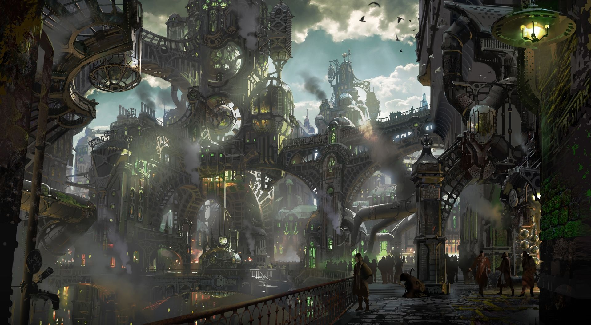
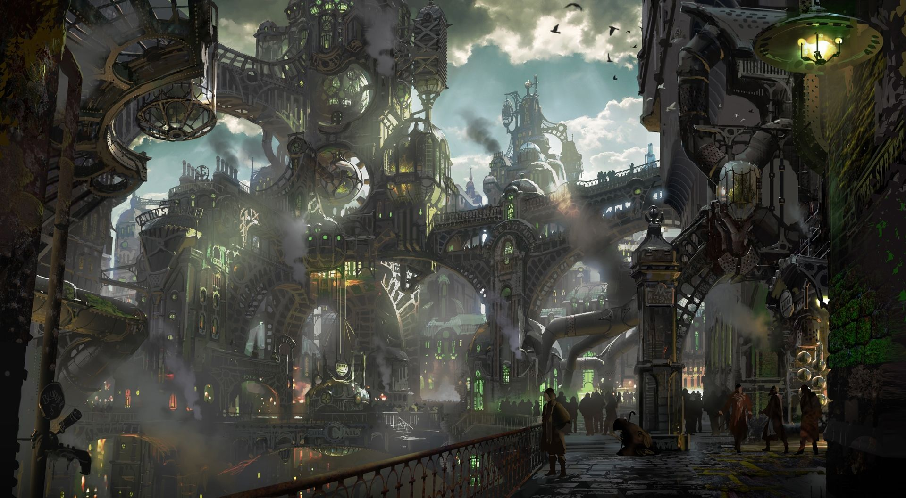

⚔️Explora el Mundo de Arcane⚔️
⚙️✨Piltover
Piltover es conocida como la Ciudad del Progreso, hogar de inventores brillantes y tecnología avanzada.
Su riqueza y cultura florecen gracias al uso del *Hextech*, una fuente de energía revolucionaria que impulsa desde herramientas hasta grandes máquinas.
A pesar de su brillo y elegancia, Piltover también enfrenta rivalidades y conflictos internos, donde la ambición y la innovación se encuentran en una lucha constante.
Es una ciudad donde las oportunidades y el peligro coexisten en un delicado equilibrio.
☣️🌫️Zaun
 

Zaun, en contraste, es una ciudad subterránea donde la supervivencia es una constante.
Bajo la opulencia de Piltover, Zaun lucha con su contaminación química y la falta de recursos básicos.
Sin embargo, sus habitantes son resilientes, innovadores y encuentran formas de prosperar en este entorno hostil.
Entre sus oscuros callejones y fábricas, Zaun es un refugio para aquellos que buscan libertad y la oportunidad de escapar de las reglas opresivas de la superficie.